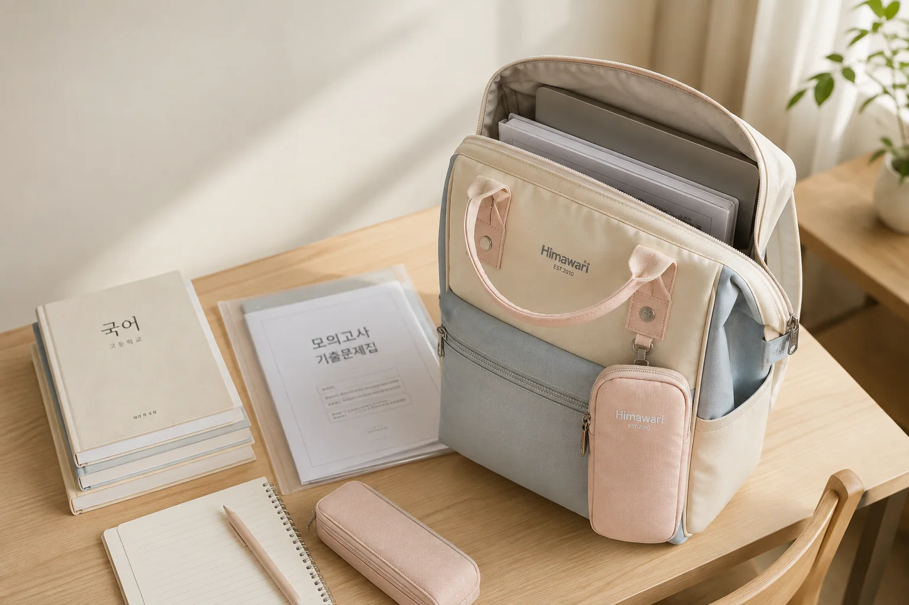

책과 서류의 모서리가 눌리는 자리

책과 서류가 가방 안에 들어갔는데 모서리가 접혔다면 크기뿐 아니라 닿는 면을 봐야 합니다. 파일 옆에 둥근 파우치가 놓였거나 충전 도구가 책 위로 이동하면 납작한 물건에 다른 형태가 닿습니다. 종이를 한 번 넣은 상태와 하루 동안 여러 물건을 꺼낸 뒤의 상태도 다를 수 있습니다. 책과 서류를 정리할 때는 출발의 배치에 더해 꺼내고 되담는 순서까지 생각하면 눌리는 위치를 찾기 쉽습니다.
준비할 기준은 평소 가장 큰 파일입니다. 종이의 규격 이름만 적기보다 파일을 닫은 상태의 실제 크기를 봅니다. 파일 자체의 여밈이나 장식이 다른 책과 닿을 수 있으므로 두께와 돌출된 부분도 확인하세요. 가방 안쪽이 넓어 보여도 입구의 곡선이나 여밈 때문에 모서리가 걸릴 수 있습니다. 같은 파일을 직접 넣고 꺼내보면 가방을 닫기 위해 종이를 구부려야 하는지 알아볼 수 있습니다.
파일이 놓일 평평한 면
낱장은 닫힌 파일이나 봉투로 묶어 다른 소지품과 구분할 수 있습니다. 과목이나 업무마다 여러 파일을 추가하기 전에 오늘 사용할 자료와 보관만 할 자료를 나눕니다. 파일이 늘어날수록 두께가 커지므로 분류의 수가 실제로 찾는 데 도움이 되는지 봅니다. 오늘 쓸 묶음을 표시하고 사용 뒤 돌아갈 위치를 정하면 필요한 자료를 찾으려고 오래된 종이까지 모두 꺼내지 않아도 됩니다.
책과 파일은 넓은 면이 자연스럽게 놓이는 방향을 먼저 찾아봅니다. 가방을 세운 상태에서 파일이 옆으로 쓰러지는지, 다른 짐을 꺼낸 뒤에도 제자리에 있는지를 확인하세요. 빈 공간을 메우려고 겉옷을 강하게 밀어 넣으면 파일이 눌릴 수 있으므로 필요한 받침이 어떤 모양인지 실제로 봅니다. 종이가 반듯하게 놓이는 조건과 가방을 가득 채우는 것은 같은 목표가 아닙니다. 여유가 남아도 파일이 움직이지 않을 배치를 찾을 수 있습니다.
책 두 권과 파일 하나를 가져가는 날이라면 가장 큰 파일을 먼저 넣고 책의 높이를 비교해볼 수 있습니다. 높이가 다른 책 위에 필통을 가로로 얹으면 한쪽 모서리만 눌리는지 살펴보세요. 이 예시는 특정 조합의 수납을 보장하는 방식이 아니라 물건끼리 어디에 닿는지 읽는 과정입니다. 책을 꺼냈을 때 파일도 따라 움직인다면 둘을 묶는 위치나 다른 소품의 자리를 바꿀 이유가 생깁니다.
Himawari No.1027 제품 정보의 이 제품은 외부 크기가 가로 28 × 세로 40 × 폭 17cm입니다. 책과 파일을 운반할 백팩으로 검토한다면 겉 크기만 보지 않고 실제 파일과 가방 입구를 대조합니다. 먼저 파일을 넣고 자연스럽게 닫히는지 본 다음 평소 책과 도구를 더해볼 수 있습니다. 다른 물건이 추가되었을 때도 파일을 꺼내고 되담는 동작이 가능한지가 중요한 비교 조건입니다.

책 사이에 남겨두지 않을 소품
열쇠와 충전 도구처럼 단단한 작은 물건은 책 사이에 흩어져 있으면 위치를 알기 어렵습니다. 별도 파우치로 모으고 파일과 직접 닿는 부분을 살펴보세요. 파우치를 쓴다고 모든 눌림이 없어지는 것은 아니므로 파우치의 외형이 책 위에 놓일 때 어떤 면을 누르는지도 봅니다. 작은 도구를 한 묶음으로 옮기면 물건의 위치를 기억하기 쉽고 책을 펼칠 때 도구가 함께 나오는 상황도 줄일 수 있습니다.
물병이나 음료를 함께 담는 경우에는 용기의 닫힘을 확인하고 종이 묶음과 구분할 자리를 정합니다. 같은 가방을 쓴다는 이유로 닫힌 파일이 모든 물기를 막아주리라 기대하지 않습니다. 젖은 우산처럼 상태가 달라지는 물건은 귀가할 때 어느 묶음으로 돌아올지도 생각하세요. 오전에는 종이만 있던 자리라도 오후에 다른 물건을 넣는다면 파일과 닿는 면이 바뀌므로 그 순간의 배치를 확인할 필요가 있습니다.
하루 동안 새 종이를 받는 일정이라면 빈 파일 면이나 별도 봉투를 준비할 수 있습니다. 받은 자료를 책 사이에 임시로 끼우면 집에 돌아와 어느 책에 넣었는지 찾아야 합니다. 바로 사용할 자료와 집에서 보관할 자료를 구분해 넣고, 메모가 필요한 경우에는 어느 과목이나 업무의 종이인지 알 수 있게 남깁니다. 다 쓴 종이를 계속 새 자료 아래에 넣지 않으면 다음에 꺼낼 묶음의 두께도 유지하기 쉽습니다.
꺼낸 뒤 돌아갈 순서
책을 사용한 뒤에는 표지와 모서리를 정리한 상태로 되담습니다. 열린 페이지 사이에 필기구나 작은 메모를 넣어 가방에 밀어 넣지 않고, 임시 표식이 있다면 튀어나온 부분을 살펴보세요. 파일은 종이 끝이 입구 밖에 남지 않았는지 확인한 뒤 닫습니다. 그다음 다른 소품을 제자리로 돌리면 납작한 물건의 배치를 먼저 만들 수 있습니다. 가방을 닫을 때 지퍼 아래로 종이 끝이 드러나는지도 봅니다.
귀가 뒤에는 오늘 받은 자료부터 꺼내 보관할 목적에 따라 나눕니다. 계속 들고 다닐 책과 다음날 필요 없는 책도 시간표나 업무 일정과 대조하세요. 하루 동안 파일 모서리가 눌린 곳이 있다면 어느 물건과 만났는지 가방 안의 배치를 다시 살펴볼 수 있습니다. 관리가 필요한 책이나 파일은 각각의 상태에 맞게 정리하고, 불필요한 안내문이 다음 자료 아래로 쌓이지 않도록 빈 파일 면을 다시 마련하면 됩니다.
같은 파일을 계속 사용한다면 꺼내는 방향과 돌아가는 위치를 일정하게 정할 수 있습니다. 책이 바뀌는 날에는 높이와 두께가 달라지므로 주변 소품의 배치도 다시 봅니다. 한쪽으로 파일이 넘어졌다면 더 많은 물건을 채우기 전에 빈 면과 받치는 위치를 살펴보세요. 종이를 반듯하게 옮기는 준비는 파일의 크기를 맞추고, 단단한 소품을 나누고, 사용 뒤 원래 모양으로 되담는 동작이 이어지는 과정입니다.